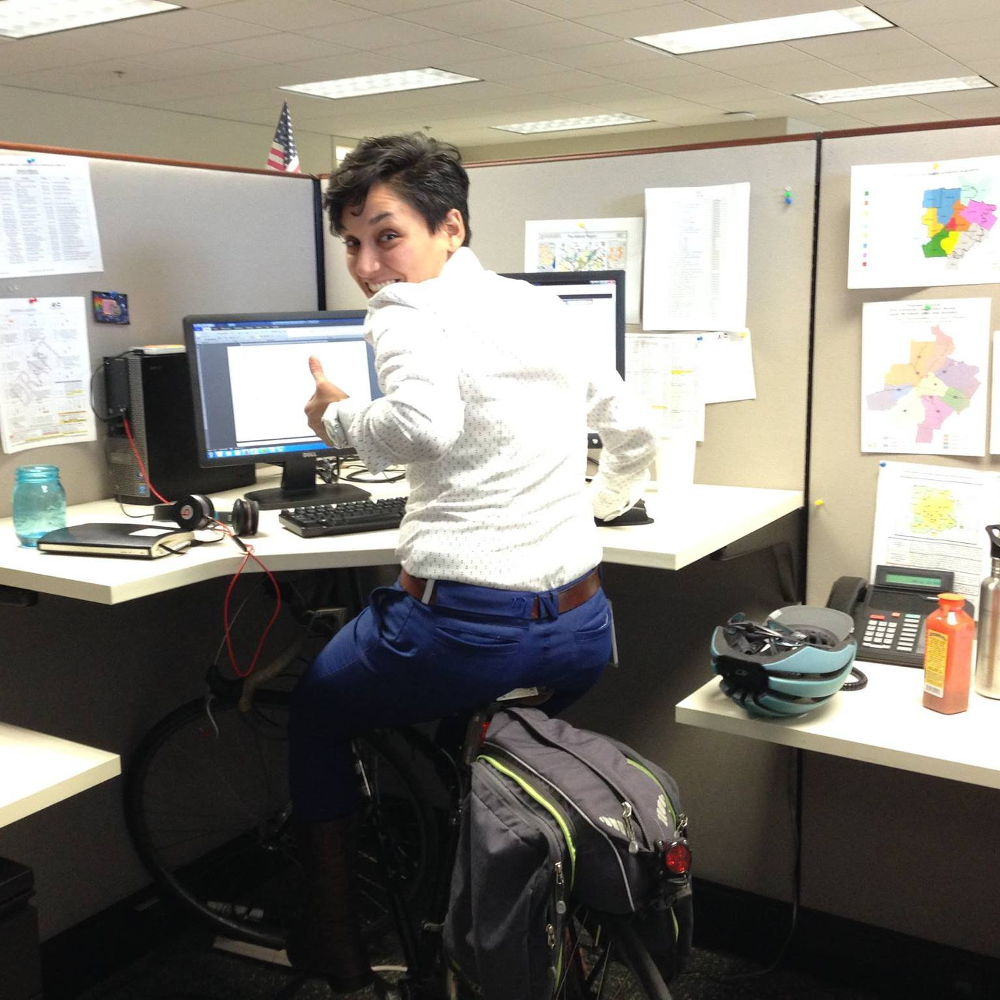

Transportation Technology
Atlanta Regional Commission
What is ARC?
Regional Impact + Local Relevance
Convener
Resource
Mantra
“Talent wins games, but teamwork and intelligence wins championships. - Michael Jordan.”
Hi!
This is the Transportation Technology Team.
What do I do?
General Transit Feed Specification

Web Apps
Active CountsAnd SO much more...
Smart Cities
Thanks!
lcaceda@atlantaregional.com